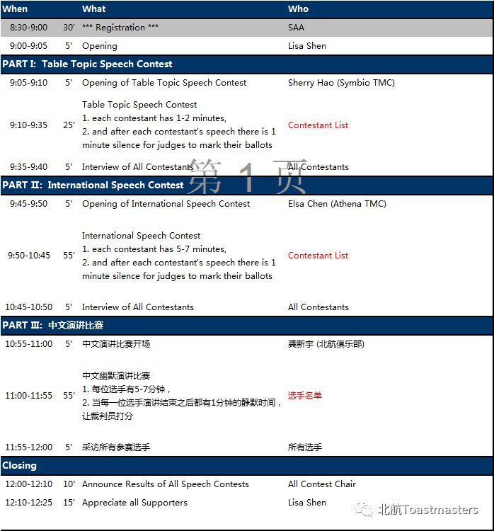

Your attention please!
Our regular meeting would take a break this Friday for the spring contest presented by Aera 2, Division D, District 88. You are welcome to attend the contest at 9:00 am, April 1(st). The contest would be held at Room B106, New Main Building, Beihang University. The agenda has been attached at the end of this notice. Regular meetings would be held normally after the spring contest.
Beihang TMC

——————————————————————————

Toastmasters International (TI) is a non-profit educational organization that operates clubs worldwide for the purpose of helping members improve their communication, public speaking, and leadership skills.You can find us by the following map of Beihang University.

原文链接（公众号关闭后可能失效）：
https://mp.weixin.qq.com/s/07tfNg_geLkNTKuTDt4n8w
https://mp.weixin.qq.com/s/07tfNg_geLkNTKuTDt4n8w
第 457/539 篇 · 北航Toastmasters英文演讲俱乐部公众号存档
本页为抢救式本地归档，图文已永久保存。
本页为抢救式本地归档，图文已永久保存。